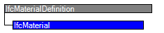

Natural language names
| Material | |
 | Material |
 | Matériau |
| Material | |
| Material |
| Matériau |
| Item | SPF | XML | Change | Description | IFC2x3 to IFC4 |
|---|---|---|---|---|
| IfcMaterial | ||||
| Description | ADDED | |||
| Category | ADDED |
IfcMaterial is a homogeneous or inhomogeneous substance that can be used to form elements (physical products or their components).
IfcMaterial is the basic entity for material designation and definition; this includes identification by name and classification (via reference to an external classification), as well as association of material properties (isotropic or anisotropic) defined by (subtypes of) IfcMaterialProperties. An instance of IfcMaterial may be associated to an element or element type using the IfcRelAssociatesMaterial relationship. The assignment might either be direct as a single material information, or via
An IfcMaterial may also have presentation information associated. Such presentation information is provided by IfcMaterialDefinitionRepresentation, associating curve styles, hatching definitions or surface colouring/rendering information to a material.
HISTORY New entity in IFC4
IFC4 CHANGE The attributes Description and Category have been added.
| # | Attribute | Type | Cardinality | Description | G |
|---|---|---|---|---|---|
| 1 | Name | IfcLabel |
Name of the material.
EXAMPLE A view definition may require Material.Name to uniquely specify e.g. concrete or steel grade, in which case the attribute Material.Category could take the value 'Concrete' or 'Steel'. NOTE Material grade may have different meaning in different view definitions, e.g. strength grade for structural design and analysis, or visible appearance grade in architectural application. Also, more elaborate material grade definition may be associated as classification via inverse attribute HasExternalReferences. | X | |
| 2 | Description | IfcText | ? |
Definition of the material in more descriptive terms than given by attributes Name or Category.
IFC4 CHANGE The attribute has been added at the end of attribute list. | X |
| 3 | Category | IfcLabel | ? |
Definition of the category (group or type) of material, in more general terms than given by attribute Name.
EXAMPLE A view definition may require each Material.Name to be unique, e.g. for each concrete or steel grade used in a project, in which case Material.Category could take the values 'Concrete' or 'Steel'. IFC4 CHANGE The attribute has been added at the end of attribute list. | X |
| HasRepresentation | IfcMaterialDefinitionRepresentation @RepresentedMaterial | S[0:1] | Reference to the IfcMaterialDefinitionRepresentation that provides presentation information to a representation common to this material in style definitions.
IFC2x3 CHANGE The inverse attribute HasRepresentation has been added. | X | |
| IsRelatedWith | IfcMaterialRelationship @RelatedMaterials | S[0:?] | Reference to a material relationship indicating that this material is a part (or constituent) in a material composite.
IFC4 CHANGE The inverse attribute has been added. | X | |
| RelatesTo | IfcMaterialRelationship @RelatingMaterial | S[0:1] | Reference to a material relationship indicating that this material composite has parts (or constituents).
IFC4 CHANGE The inverse attribute has been added. | X |

| # | Attribute | Type | Cardinality | Description | G |
|---|---|---|---|---|---|
| IfcMaterialDefinition | |||||
| AssociatedTo | IfcRelAssociatesMaterial @RelatingMaterial | S[0:?] | Use of the IfcMaterialDefinition subtypes within the material association of an element occurrence or element type. The association is established by the IfcRelAssociatesMaterial relationship.
IFC4 CHANGE The inverse attribute has been added. | X | |
| HasExternalReferences | IfcExternalReferenceRelationship @RelatedResourceObjects | S[0:?] | Reference to external references, e.g. library, classification, or document information, that are associated to the material.
IFC4 CHANGE The inverse attribute has been added. | X | |
| HasProperties | IfcMaterialProperties @Material | S[0:?] | Material properties assigned to instances of subtypes of IfcMaterialDefinition.
IFC4 CHANGE The inverse attribute has been added. | X | |
| IfcMaterial | |||||
| 1 | Name | IfcLabel |
Name of the material.
EXAMPLE A view definition may require Material.Name to uniquely specify e.g. concrete or steel grade, in which case the attribute Material.Category could take the value 'Concrete' or 'Steel'. NOTE Material grade may have different meaning in different view definitions, e.g. strength grade for structural design and analysis, or visible appearance grade in architectural application. Also, more elaborate material grade definition may be associated as classification via inverse attribute HasExternalReferences. | X | |
| 2 | Description | IfcText | ? |
Definition of the material in more descriptive terms than given by attributes Name or Category.
IFC4 CHANGE The attribute has been added at the end of attribute list. | X |
| 3 | Category | IfcLabel | ? |
Definition of the category (group or type) of material, in more general terms than given by attribute Name.
EXAMPLE A view definition may require each Material.Name to be unique, e.g. for each concrete or steel grade used in a project, in which case Material.Category could take the values 'Concrete' or 'Steel'. IFC4 CHANGE The attribute has been added at the end of attribute list. | X |
| HasRepresentation | IfcMaterialDefinitionRepresentation @RepresentedMaterial | S[0:1] | Reference to the IfcMaterialDefinitionRepresentation that provides presentation information to a representation common to this material in style definitions.
IFC2x3 CHANGE The inverse attribute HasRepresentation has been added. | X | |
| IsRelatedWith | IfcMaterialRelationship @RelatedMaterials | S[0:?] | Reference to a material relationship indicating that this material is a part (or constituent) in a material composite.
IFC4 CHANGE The inverse attribute has been added. | X | |
| RelatesTo | IfcMaterialRelationship @RelatingMaterial | S[0:1] | Reference to a material relationship indicating that this material composite has parts (or constituents).
IFC4 CHANGE The inverse attribute has been added. | X | |
Property Sets for Objects
The Property Sets for Objects concept template applies to this entity as shown in Table 681.
Table 681 — IfcMaterial Property Sets for Objects |
<?xml version="1.0"?>
<ConceptRoot xmlns:xsd="http://www.w3.org/2001/XMLSchema" xmlns:xsi="http://www.w3.org/2001/XMLSchema-instance" uuid="273c1b6b-c95d-4551-bf2e-264a167469dc" name="IfcMaterial" status="sample" applicableRootEntity="IfcMaterial">
<Concepts>
<Concept uuid="3d497394-85a9-4046-8983-eabd3c87533e" name="Property Sets for Objects" status="sample" override="false">
<Template ref="f74255a6-0c0e-4f31-84ad-24981db62461" />
<TemplateRules operator="and">
<TemplateRule Parameters="PsetName[Value]='Pset_MaterialCombustion'" />
<TemplateRule Parameters="PsetName[Value]='Pset_MaterialCommon'" />
<TemplateRule Parameters="PsetName[Value]='Pset_MaterialEnergy'" />
<TemplateRule Parameters="PsetName[Value]='Pset_MaterialFuel'" />
<TemplateRule Parameters="PsetName[Value]='Pset_MaterialHygroscopic'" />
<TemplateRule Parameters="PsetName[Value]='Pset_MaterialMechanical'" />
<TemplateRule Parameters="PsetName[Value]='Pset_MaterialOptical'" />
<TemplateRule Parameters="PsetName[Value]='Pset_MaterialThermal'" />
<TemplateRule Parameters="PsetName[Value]='Pset_MaterialWater'" />
</TemplateRules>
</Concept>
</Concepts>
</ConceptRoot>
| # | Concept | Template | Model View |
|---|---|---|---|
| IfcMaterial | |||
| Property Sets for Objects | Property Sets for Objects | General Usage | |
<xs:element name="IfcMaterial" type="ifc:IfcMaterial" substitutionGroup="ifc:IfcMaterialDefinition" nillable="true"/>
<xs:complexType name="IfcMaterial">
<xs:complexContent>
<xs:extension base="ifc:IfcMaterialDefinition">
<xs:sequence>
<xs:element name="HasRepresentation" type="ifc:IfcMaterialDefinitionRepresentation" nillable="true" minOccurs="0" maxOccurs="1"/>
</xs:sequence>
<xs:attribute name="Name" type="ifc:IfcLabel" use="optional"/>
<xs:attribute name="Description" type="ifc:IfcText" use="optional"/>
<xs:attribute name="Category" type="ifc:IfcLabel" use="optional"/>
</xs:extension>
</xs:complexContent>
</xs:complexType>
ENTITY IfcMaterial
SUBTYPE OF (IfcMaterialDefinition);
Name : IfcLabel;
Description : OPTIONAL IfcText;
Category : OPTIONAL IfcLabel;
INVERSE
HasRepresentation : SET [0:1] OF IfcMaterialDefinitionRepresentation FOR RepresentedMaterial;
IsRelatedWith : SET [0:?] OF IfcMaterialRelationship FOR RelatedMaterials;
RelatesTo : SET [0:1] OF IfcMaterialRelationship FOR RelatingMaterial;
END_ENTITY;
 Instance diagram
Instance diagram Link to this page
Link to this page